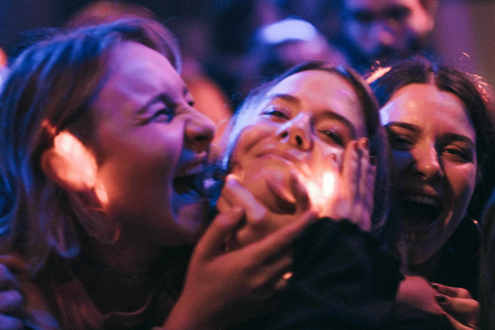

Cut sheet
Set 3 · The Basement, Comedy Club · 4:52 · Friday 10 Oct · the same numbers at every venue
Your set, shot by shot. Gold cuts are laughs the room gave you; the striped one is dead air.
open · wide

laugh 0:41
wide
laugh 1:36
dead 4.1 s
wide · bit 3 went quiet
laugh 3:12
close · applause
0:001:002:003:004:004:52
Measured, not judged
| 3.1 | laughs per minute | a club average is around 4; your opener earned 2 in 40 seconds |
| 4.1 s | longest dead air | at 2:05, after the tag on bit 2 |
| 172 | words per minute | bit 3 ran at 196; the room lost the setup |
| 7 | fillers | "basically" ×4, "like" ×3 |
| 5 / 8 | punchlines that landed | detection is an estimate; grey moments were not counted |
Your MC · Sarcastic
"Bit three died a quiet death at a hundred and ninety-six words a minute. Even I couldn't heckle that fast."
Say the setup of bit 3 at the pace of your opener, then wait. The room needs a full second to realise it's allowed to laugh.
spoken by the MC · written from the measured set, labelled as an opinion where it is one
Press OK to go again at the TheatreBack · green room · Up/Down · change venue